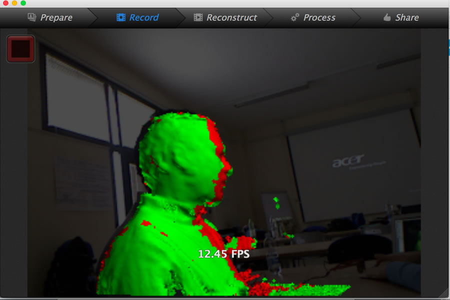
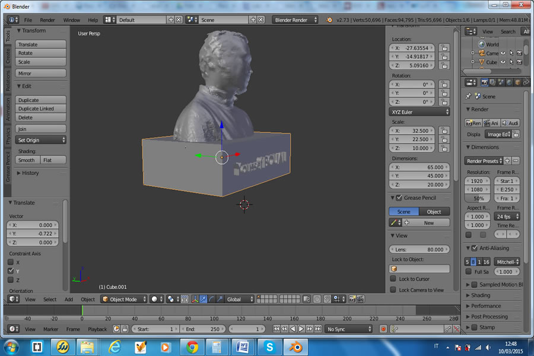

This week we learnt about 3D Scanning and Printing techniques and tools: How to design a 3D object using various software, then the various types of 3D printers using many print techniques and materials. Also we went through other techniques of 3D scanning using tools varying from advanced professional ones to basic cheap ones like the Kinect.
I was waiting with great enthusiast this week course and assignement about 3D design, and therefore the assignment for this week allowed me to explore this domain a bit more. The exercise of this week is to design and 3D print a small object of our choice, then 3D scan an object and then (if possible)3D print it.
In order to learn as much software as possible, I tried many solutions in order to make many drafts and see how they work and decide which software is most confortable for me. I used 123D, SketchUp, Rhino and more extensively Blender in order to design, build and modify 3D objects.
On the other hand, I used Skanect software with the Kinect hardware in order to 3D scan objects. I made many trials at the beginning in order to learn how to use this combination (hardware/software), and at the end I realized a fair 3D object.
For this activity I wanted to design a usefull object, so that I tried to print an object for my friend Graziano who is building by himself a RepRapPRO Prusa. The object to design is a customized filament spool arm holder, so the starting point was to find a similar model as a starting point then customize it. This is the example of the object to design and print:
I started with a base file, then I tried to make necessary changes in order to customize it to specific requirements and size. First I used Rhino to modify the original file as follow:
Then I moved to Blender in order create the mesh and prepare the file for printing. As I needed to print two parts, I make a file with duplicate objects so for the printing work I send only one task and save time:
Here are the steps:
Next step was to 3D print the spool arms, this is the results:
Exercise2: 3D Scan and Print

Using Blender, I imported the STL file of my scanned 3D object where I found that the object was very crude with a lot of imperfections. Here is what I got at first:
Always using Blender, I made many changes to the 3D object in order to eliminate the imperfections, smoothen the angles and even further I reconstructed my nose as I was very bad. After that I added a cubic base to my “Torso” and attached my name in 3D. This is the final result:

The STL files are available for downloand here: